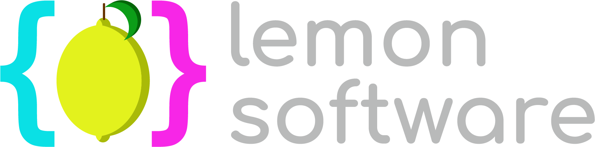
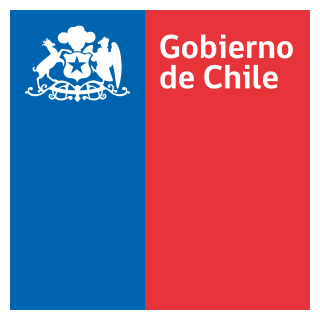
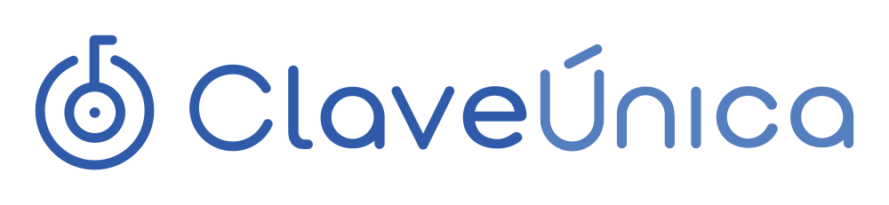
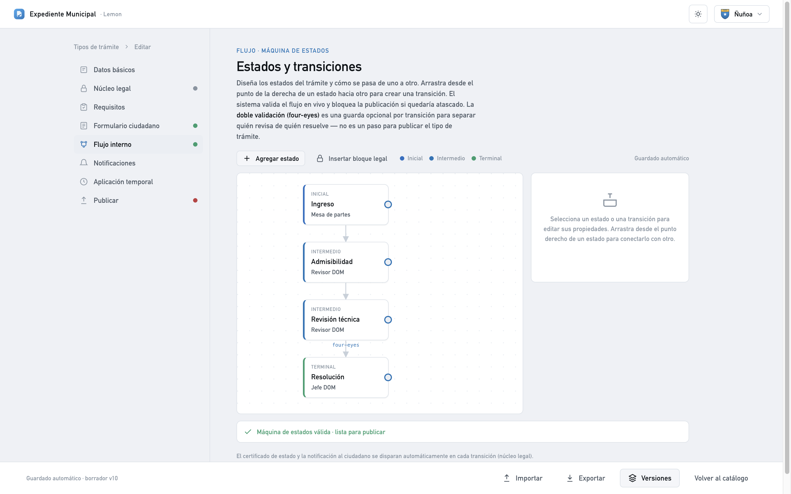
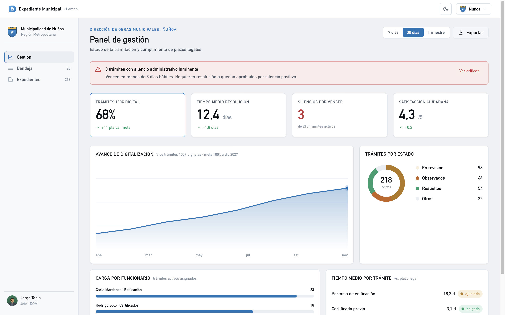
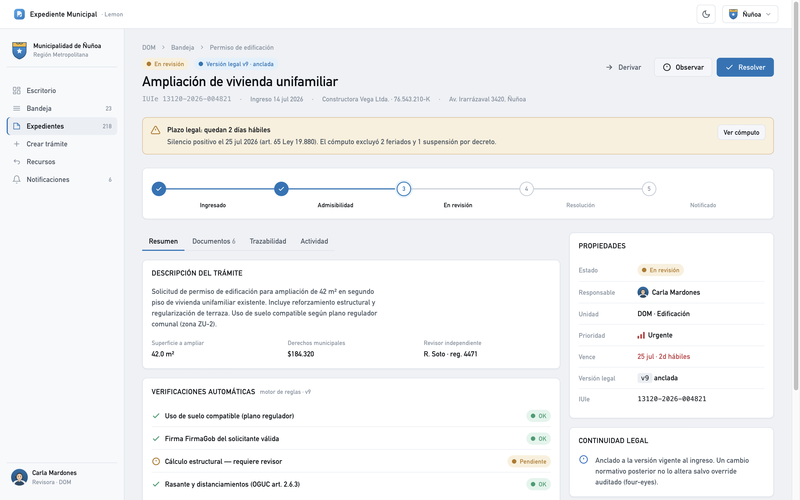
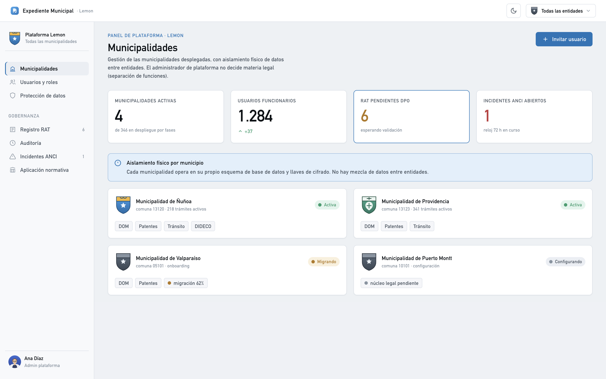
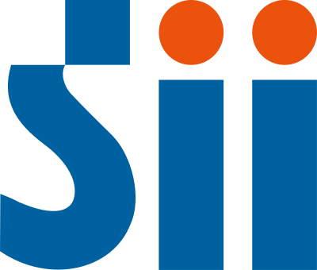

Del trámite que inicia un ciudadano hasta el flujo interno completo del municipio: un solo expediente electrónico con trazabilidad total de cada paso.



La Ley 21.180 de Transformación Digital exige que los procedimientos administrativos se realicen de forma electrónica de extremo a extremo. Los 346 municipios del país deben cumplir — la mayoría todavía tramita en papel.
El vecino inicia y sigue su trámite en línea con ClaveÚnica, sin ir al municipio: catálogo, requisitos, pago y firma.
Cada trámite es un expediente electrónico con IUIe único: estados, plazos, responsables, documentos y firma, todo trazado.
Cada municipio arma sus propios tipos de trámite (requisitos, formularios y flujo) sin programar. Lemon custodia solo el núcleo legal.
La plataforma está diseñada para responder, en un solo producto, a las cuatro obligaciones normativas que hoy enfrenta cada municipio.
Procedimiento administrativo electrónico, expediente único e interoperabilidad con el Estado.
Trazabilidad y registro auditable de cada actuación, listo para transparencia activa y pasiva.
Datos personales protegidos por diseño, registro de tratamiento (RAT) y control de accesos.
Marco de ciberseguridad y gestión de incidentes con los plazos de notificación de la ANCI.
Requisitos, formulario, flujo de aprobación y notificaciones se diseñan con un editor visual de arrastrar y soltar. Lemon solo custodia el núcleo legal; el resto lo controla el municipio.

La plataforma calcula el plazo legal de cada trámite —excluyendo feriados y suspensiones— y avisa antes de que venza. Es el dolor que Contraloría detecta una y otra vez, resuelto de raíz.

Cada actuación se encadena con hash y se sella con la hora oficial (SHOA). Las decisiones sensibles exigen dos personas (four-eyes). Listo para una fiscalización, sin preparar nada.

Registro de tratamiento de datos (RAT) autogenerado, gestión de incidentes con los relojes de la ANCI y aislamiento físico por municipio: cada comuna, su propia base y sus propias llaves.

El ciudadano entrega su información una sola vez: el resto lo verifica el Estado. Menos papeles, menos filas, menos error.

Puedes interactuar con cada pantalla real (probar el formulario, abrir pestañas). Es un adelanto acotado: no incluye todo el sistema.
Ya tenemos la plataforma que lleva el trámite de principio a fin, de la solicitud del ciudadano a la fiscalización en terreno. El siguiente paso es una demo guiada con tu equipo.